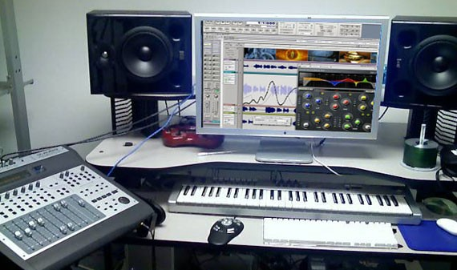

Aquí se llevan a cabo todas las tareas especificadas en la fase de planificación, teniendo como guía fundamental el documento de diseño. Esto incluye entre otras cosas la codificación del programa, la creación de sprites, tiles y modelos 3d, la grabación de sonidos, voces y música, la creación de herramientas para acelerar el proceso de desarrollo, entre otras..
Un videojuego (del inglés video game) o juego de video es un software informático creado para el entretenimiento en general y basado en la interacción entre una o varias personas y un aparato electrónico que ejecuta dicho videojuego; este dispositivo electrónico puede ser una computadora, un sistema arcade, una videoconsola, un dispositivo handheld o un teléfono móvil, los cuales son conocidos como "plataformas". Aunque, usualmente el término "video" en la palabra "videojuego" se refiere en sí a un visualizador de gráficos rasterizados, hoy en día se utiliza para hacer mención de cualquier tipo de visualizador.
Los juegos 2D deben ser ilustrados por artistas experimentados, quienes trabajan tomando en consideración las limitaciones técnicas del hardware sobre el cual correrá el juego, esto incluye: Cantidad de colores disponibles, tamaño de los sprites, resolución final de los sprites y formatos a utilizar. Los artistas 2D también son los encargados de elaborar las animaciones del juego.
Es la forma en que se verán los elementos de la interfaz gráfica de usuario y el HUD, mediante los cuales el usuario interactuará con el juego.
Los artistas utilizan herramientas comerciales de modelado y animación tridimensional como 3DS Max, Maya, XSI/Softimage, Blender (el cual no es comercial), etc. Pero además usan herramientas desarrolladas internamente que facilitan algunas de las funciones más comunes del proceso de creación de juegos.
Los ingenieros de sonido se encargan de crear sonidos para cada objeto o personaje del juego. Pueden crear sonidos desde cero o utilizar sonidos del ambiente y modificarlos según sus necesidades.
|  |